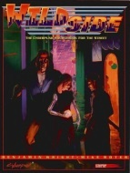

|  | Fiche technique |
| Supplément pour le jeu de rôles Cyberpunk 2020, édité par R. Talsorian Games (1993) | |
| Langue | Anglais |
| Thème | Le monde de la rue en 2020 |
| Qualité du background | 3 / 5 |
| Qualité des scénarii | - |
| Qualité des règles | 1 / 5 |
| Qualité des illustrations | 2 / 5 |
| Qualité de l'écriture | 4 / 5 |
Ce supplément, dédié à notre ami le fixer, permet non seulement d'approfondir ce genre de personnage, mais aussi de travailler le côté underground de la rue. Fini les intermédiaires anonymes, ici la rue est passée au crible. Malheureusement, certains aspects "évidents" sont mis en avant comme des révélations, ce qui donne parfois l'impression d'un certain remplissage. Heureusement, le texte est dense, et si certains passages sont superflus (notamment les règles concernant la rue, comment se passe un deal, les différent types de fixers, etc), on trouve également du bon. De nombreux élements sont factorisés d'autres suppléments (Night City, Hardwired, Protect & Serve) et parfois améliorés. En bref, ce supplément oscille entre le neuf et l'ancien, essayant d'expliquer sans apporter beaucoup de nouveauté, et on peut être déçu par son contenu "candide" vis à vis de la sous-culture urbaine.
{kind=link}